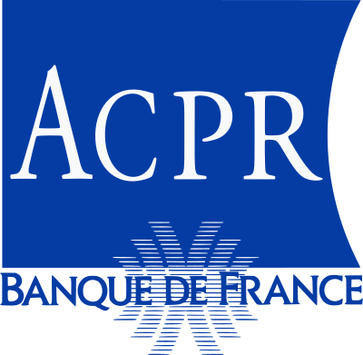

Les règles imposées aux banques protègent-elles réellement l'économie ?
R5.03 Financement et régulation de l'économie · Mme Mokrani El Bougrin
Romane Da Silva & Sofian Chtioui · Groupe 2 · BUT 3 TC MDEE, IUT de Roubaix · 2026-2027
1 / 18
Bonjour à tous. Aujourd'hui, Romane et moi, on va vous présenter le dernier sujet du cours : comment on régule la finance.
Sommaire
Problématique
Les règles imposées aux banques protègent-elles réellement l'économie ?
1
Pourquoi régulerLes défaillances, le risque systémique
Slides 3 à 4
2
Qui régule, avec quels outilsAutorités, normes de Bâle, fonds propres, liquidité
Slides 5 à 11
3
La crise de 2023SVB, Credit Suisse, la situation actuelle
Slides 12 à 15
4
ConclusionCe que protègent les règles, ce qu'elles ne protègent pas
Slide 16
2 / 18
Pour aborder notre sujet, on s'est basés sur la problématique suivante : les règles imposées aux banques protègent-elles réellement l'économie ?
Pour y répondre, on va d'abord vous montrer pourquoi il faut réguler les banques : les raisons, les défaillances, et ce qu'on appelle le risque systémique. Ensuite, on verra qui régule et avec quels outils. On vous parlera bien évidemment de la fameuse crise de 2023, qui a servi de test à ces règles. Et on conclura sur ce que ces règles protègent, et ce qu'elles ne protègent pas.
Pourquoi réguler les banques
Asymétrie d'informationLe déposant ne peut pas juger sa banque
Aléa moralToo big to fail : la banque risque, l'État rattrape
ExternalitéLa faillite d'une banque coûte à toute l'économie
Le coût de 2008
1 459 Md€d'aides en capital approuvées, UE, 2008 à 2017
3 659 Md€d'aides de liquidité approuvées, UE
-4,3 %de PIB aux États-Unis, du pic au creux
Sources : Cour des comptes européenne, Control of State aid to banks (2019), (consulté le 20/11/2026) ; Federal Reserve History, Great Recession, (consulté le 20/11/2026)
3 / 18
Alors, pourquoi réguler les banques ? C'est tout simplement parce qu'une banque n'est pas une entreprise comme les autres. Elle est particulière, et ça pour trois raisons.
La première, c'est l'asymétrie d'information, qu'on a vue en séance 1. Souvenez-vous de la start-up : on ne pouvait pas vérifier son business plan, donc on faisait confiance à la banque. Mais vous, déposant, c'est-à-dire client qui a de l'argent sur son compte, vous êtes dans la même situation face à votre banque : vous ne voyez ni ses crédits ni ses pertes.
La deuxième, c'est l'aléa moral : quand on sait qu'on sera protégé, on prend plus de risques. Si une banque est trop grosse pour tomber, « too big to fail », l'État la sauve, parce que sa chute entraînerait toute l'économie avec elle. Donc elle est tentée de prendre plus de risques, puisque les gains sont pour elle et les pertes pour tout le monde.
La troisième, c'est l'externalité : un coût que subissent des gens qui n'ont rien décidé. Quand une banque tombe, ça coûte à toute l'économie.
Et c'est ce qui s'est passé en 2008. Les États européens ont approuvé 1 459 milliards d'euros d'aides en capital, de l'argent public mis dans les banques pour boucher leurs pertes, et 3 659 milliards d'aides de liquidité, des garanties et des prêts pour qu'elles puissent payer leurs dettes à court terme. Attention, ce sont des montants approuvés, tout n'a pas été utilisé. Et le PIB américain, donc la richesse produite dans l'année, a reculé de 4,3 % entre son point haut et son point bas.
Si un commerce ferme, ça touche son propriétaire et ses clients. Si une banque tombe, ça touche tout le monde. C'est pour ça qu'on impose des règles aux banques, et pas à un commerce ordinaire.
Le risque systémique
1InterconnexionLes banques se prêtent entre elles
2PaniqueLes déposants retirent leur argent en masse
3Ventes forcéesLes actifs vendus dans l'urgence perdent leur valeur
Lehman Brothers, mai 2008639 Md$possédés par la banque
Source : NBC News, faillite de Lehman, 15/09/2008, bilan du 31/05/2008, (consulté le 20/11/2026)
4 / 18
Parlons maintenant du risque systémique : c'est ce qu'on appelle l'effet domino. La difficulté d'une seule banque se propage à tout le système, puis à l'économie. Dans le cours 3, la prof a distingué trois risques, et celui-ci, c'est le risque systémique : celui où le système lui-même peut s'effondrer. Il y a trois chemins, que vous voyez numérotés sur le schéma.
Le premier, c'est l'interconnexion. Les banques se prêtent de l'argent entre elles. Donc quand l'une ne rembourse plus, ses prêteurs perdent de l'argent à leur tour, et deviennent fragiles à leur tour.
Le deuxième, c'est la panique. Les déposants, ces clients qui ont de l'argent sur leur compte, ne connaissent pas l'état réel de leur banque. Dès qu'ils ont un doute, ils retirent leur argent en même temps : c'est la ruée bancaire. Et même une banque saine ne peut pas payer tout le monde, parce qu'une banque, on l'a vu en séance 1, collecte des dépôts mais les transforme en crédits : l'argent n'est pas dans le coffre, il est prêté.
Le troisième, ce sont les ventes forcées. Pour trouver de l'argent vite, les banques bradent leurs actifs, c'est-à-dire ce qu'elles possèdent, et font baisser leur prix pour tout le monde. C'est comme si un voisin vendait sa maison en urgence très en dessous du marché : toutes les maisons du quartier vaudraient moins.
L'exemple le plus connu, c'est Lehman Brothers, une grande banque d'investissement américaine. Pour que vous compreniez le montant : en mai 2008, elle possédait 639 milliards de dollars d'actifs, c'est-à-dire tout ce qu'elle détenait, des crédits accordés et des titres financiers. Le problème, c'est qu'une grande partie était liée à des crédits immobiliers américains accordés à des ménages peu solvables, les fameux « subprimes ». Quand le marché immobilier américain s'est retourné, ces actifs ont perdu leur valeur, et les autres banques, qui doutaient d'elle, ont arrêté de lui prêter. Le 15 septembre 2008, elle fait faillite, et l'État américain ne la sauve pas. Les banques qui lui avaient prêté de l'argent perdent à leur tour, et surtout, elles n'osent plus se prêter entre elles. En quelques jours, le crédit se bloque et la crise devient mondiale.
Retenez que le risque du système n'est pas la somme des risques de chaque banque : c'est l'effet de réseau. Donc qui surveille tout ça ?
Qui régule : trois niveaux
Monde
Comité de BâleFixe les normes des banques, créé fin 1974 par les banques centrales du G10
FSBConseil de stabilité financière, coordonne les autorités, créé en avril 2009
Europe
BCESupervise 109 grandes banques, MSU lancé le 4/11/2014
CRUConseil de résolution unique, gère les faillites depuis 2016
ABEAutorité bancaire européenne, règles communes
France

ACPRContrôle banques et assurances, rattachée à la Banque de France
AMFProtège l'épargne, surveille les marchés financiers
HCSF
HCSFSurveille le système entier, créé par la loi de 2013
Sources : BRI, histoire du Comité de Bâle, (consulté le 20/11/2026) ; BCE, supervision bancaire, (consulté le 20/11/2026) ; FSB, (consulté le 20/11/2026) ; ACPR, AMF, (consultés le 20/11/2026)
5 / 18
Qui régule ? Pour faire simple, trois niveaux : le monde, l'Europe et la France.
Au niveau du monde, le Comité de Bâle, créé fin 1974 par les banques centrales du G10, les grands pays industrialisés. Il écrit les normes, par exemple le capital minimum qu'une banque doit avoir, mais il n'a aucun pouvoir de loi : il ne peut sanctionner aucune banque, ce sont les pays qui reprennent ses normes dans leur droit. À côté, le FSB, le Conseil de stabilité financière, créé en avril 2009 au sommet du G20 : il ne fait pas les règles, il coordonne, pour qu'une banque ne puisse pas aller s'installer là où les règles sont les plus souples.
En Europe, vous connaissez tous la BCE, celle des taux directeurs. Depuis novembre 2014, elle surveille aussi directement les 109 plus grandes banques de la zone euro. Le CRU, le Conseil de résolution unique, organise la fermeture d'une banque en faillite, on y revient. Et l'ABE, l'Autorité bancaire européenne, écrit des règles communes, pour que les banques soient jugées de la même façon à Lille ou à Madrid.
En France, l'ACPR, l'Autorité de contrôle prudentiel et de résolution, rattachée à la Banque de France, contrôle les banques et les assurances et peut les sanctionner. L'AMF, l'Autorité des marchés financiers, protège l'épargne et surveille les marchés, comme la prof l'a évoqué pour la formation des prix. Et le HCSF, le Haut Conseil de stabilité financière, créé en 2013, surveille le système entier.
Pour retenir : le monde fixe les règles, l'Europe et la France les appliquent et les contrôlent.
Micro et macroprudentiel
Microune banque
La questionCette banque est-elle solide ?
Les outilsFonds propres, liquidité, contrôles
QuiBCE, ACPR
Macrotout le système
La questionLe système peut-il tenir ?
Les outilsCoussin contracyclique : 1 % Crédit immobilier : 35 % et 25 ans
QuiHCSF
Sources : HCSF, coussin de fonds propres contracyclique, décision du 15/09/2026 ; HCSF, crédits immobiliers, décision D-HCSF-2021-7, (consultés le 20/11/2026)
6 / 18
Voyons comment ces autorités regardent la solidité des banques, de deux façons. Un mot sur le titre : « prudentiel » veut dire « qui vise la sécurité ». Micro, c'est une banque prise seule ; macro, c'est le système dans son ensemble.
La solidité, c'est la capacité d'une banque à encaisser des pertes sans faire faillite, grâce à son capital. À ne pas confondre avec la liquidité, qu'on verra plus loin : avoir assez d'argent disponible pour payer les retraits tout de suite.
Le micro : cette banque est-elle solide ? On regarde ses fonds propres et sa liquidité, avec des contrôles de la BCE et de l'ACPR, un peu comme un contrôle technique, banque par banque.
Le macro : le système peut-il tenir ? Une banque peut être solide seule et le système fragile si tout le monde prête trop. Le HCSF a deux outils. Le coussin contracyclique, à 1 % depuis janvier 2024 : quand le crédit s'emballe, on demande aux banques de mettre plus de capital de côté, comme un ménage qui épargne quand tout va bien pour avoir un matelas ensuite. Et une limite sur le crédit immobilier : 35 % de taux d'effort maximum. Concrètement, si vous gagnez 3 000 euros par mois, vos mensualités ne doivent pas dépasser 1 050 euros, sur 25 ans au plus, pour éviter que tout le monde s'endette trop.
Les deux approches se complètent. Reste à voir d'où viennent ces règles.
Les accords de Bâle
Sources : BRI, histoire du Comité de Bâle, (consulté le 20/11/2026) ; BRI, Basel III: finalising post-crisis reforms (d424), (consulté le 20/11/2026)
7 / 18
Ces règles viennent du Comité de Bâle, avec trois accords successifs.
Bâle I, en 1988, impose aux banques des fonds propres d'au moins 8 % de leurs actifs pondérés. Pondérés, ça veut dire qu'on ne compte pas tous les crédits pareil : un prêt à un État sûr pèse peu, un prêt à une PME pèse plus. Donc 8 %, c'est environ 8 euros de capital pour 100 euros de crédits pondérés.
Bâle II, en 2004, mesure mieux les risques de chaque banque, mais en 2008, on voit qu'il ne suffit pas.
Alors arrive Bâle III, publié en décembre 2010, comme réponse directe à la crise : le total reste à 8 %, mais le capital doit être de meilleure qualité et on ajoute la liquidité. Il est finalisé en décembre 2017, avec un nouveau calcul des risques.
Attention, le Comité n'est pas un législateur : chaque pays doit transposer ses accords, et ça prend du temps. Retenez que chaque accord répond à une crise ou à une faiblesse du précédent.
Les fonds propres : le coussin contre les pertes
Perte de 5Exemple théorique
La banque tient
Perte de 10Exemple théorique
La banque fait faillite
8 / 18
Pour comprendre ces ratios, il faut savoir ce que sont les fonds propres. C'est l'argent des actionnaires et les bénéfices mis en réserve : de l'argent qui n'est pas emprunté. Vous pouvez le voir comme l'apport personnel dans un crédit immobilier : c'est ce que vous mettez vous-même, et si la maison perd de la valeur, c'est votre apport qui est touché en premier, pas la banque. Pour une banque, c'est pareil : les fonds propres absorbent les pertes en premier.
Prenons un exemple théorique. Une banque dont le passif, c'est-à-dire tout ce qu'elle doit, est de 100 : 93 de dettes, dont les dépôts de ses clients, et 7 de fonds propres.
Premier cas, elle perd 5. Ses fonds propres tombent de 7 à 2, les déposants ne sont pas touchés, la banque tient.
Deuxième cas, elle perd 10. Les 7 de fonds propres sont avalés, et il reste 3 de pertes qui retombent sur les créanciers, donc sur ceux à qui elle doit de l'argent : c'est la faillite.
Plus il y a de fonds propres, plus la banque peut perdre sans toucher ses clients. Ces chiffres sont choisis pour l'illustration, ce n'est pas une vraie banque. La question devient donc : combien le régulateur impose-t-il ?
Ce que Bâle III exige
CET1
Capital + réservesRapportés aux actifs pondérés des risques
8 %
Total des fonds propres10,5 % avec le coussin de conservation
3 %
Ratio de levierTier 1 rapporté à l'exposition totale, sans pondération
Sources : BRI, Basel Framework RBC20, RBC30, RBC40, LEV20, (consulté le 20/11/2026) ; BRI, Basel III: a global regulatory framework (juin 2011), (consulté le 20/11/2026)
9 / 18
Bâle III impose un minimum, mesuré par le CET1, Common Equity Tier 1 : le capital et les réserves de la meilleure qualité, ceux qui absorbent vraiment les pertes, rapportés aux actifs pondérés des risques.
Avant Bâle III, il fallait 2 %. Maintenant, c'est 4,5 %, plus un coussin de conservation de 2,5 % : 7 % au total. Concrètement, pour 100 euros d'actifs pondérés, au moins 7 euros de capital de très bonne qualité. Si la banque entame le coussin, elle n'est pas fermée, mais elle est limitée, par exemple sur les dividendes et les primes.
Attention à ne pas confondre : 8 % pour le total des fonds propres, 10,5 % avec le coussin, 4,5 % pour le CET1 seul, 7 % avec le coussin. Bâle III n'assouplit donc pas Bâle I, il demande plus et de meilleure qualité.
On ajoute des couches variables : le coussin contracyclique, de 0 à 2,5 % selon le cycle du crédit, 1 % en France, et une surcharge de 1 à 3,5 % pour les très grandes banques mondiales. Enfin, le ratio de levier à 3 % : un filet de sécurité qui compare le capital à tous les engagements, sans pondération. Et ces 7 % ne sont pas l'exigence réelle d'une banque : le superviseur peut demander plus.
La liquidité : tenir quand tout le monde retire
LCR30 joursUne crise courte et brutale
Actifs liquides ÷ sorties à 30 jours
NSFR1 anUn financement durable
Financement stable ÷ besoin à 1 an
Sources : BRI, Basel Framework LCR20 et NSF20, (consulté le 20/11/2026) ; ABE, Risk Dashboard T2 2026, moyenne des banques de l'UE, (consulté le 20/11/2026)
10 / 18
Une banque peut être solide et tomber quand même, si tout le monde retire en même temps : c'est la liquidité. La solvabilité, c'est avoir plus d'actifs que de dettes ; la liquidité, c'est avoir de quoi payer les retraits immédiats. Souvenez-vous de l'exemple de la prof : 100 000 euros en actions Amazon, on les revend tout de suite ; un appartement, ça prend des semaines. Une banque, c'est pareil : elle peut valoir beaucoup mais ne pas pouvoir payer ses clients demain matin.
Bâle III ajoute donc deux ratios. Le LCR vérifie que la banque tient 30 jours de crise brutale : elle doit avoir assez d'actifs liquides, comme des titres d'État, pour couvrir les sorties d'argent. Le NSFR vérifie que ses crédits longs sont financés par des ressources stables, sur un an : on ne finance pas un crédit de 20 ans avec de l'argent qui peut partir demain.
Le minimum est de 100 % pour les deux. En juin 2026, la moyenne des banques de l'Union européenne est à 158,5 % et 125,7 %. Voyons comment le monde a répondu à 2008.
Les réponses à la crise de 2008
Monde2009 à 2010
FSBcréé le 2 avril 2009 au sommet du G20
Bâle IIIpublié en décembre 2010
États-Unis2010
Dodd-Frank Actsigné le 21 juillet 2010
Règle Volckerpas de spéculation pour compte propre
Tests de résistancedes grandes banques
Union européenne2014 à 2016
MSUsupervision unique, 4 novembre 2014
CRUrésolution unique, 1er janvier 2016 : actionnaires et créanciers paient d'abord (bail-in)
Sources : FSB ; Federal Reserve History, Dodd-Frank Act ; BCE, jalons ; CRU, outils de résolution, (consultés le 20/11/2026)
11 / 18
Après 2008, trois réponses.
Au niveau mondial, le FSB en avril 2009 et Bâle III en décembre 2010.
Aux États-Unis, la loi Dodd-Frank, signée en juillet 2010. Elle contient la règle Volcker : une banque ne peut plus jouer en bourse pour son propre compte avec l'argent de ses clients. Et il y a les tests de résistance : comme un crash test pour les voitures, on simule une crise grave et on regarde si les grandes banques tiennent.
En Europe, la supervision unique en novembre 2014, puis le CRU en janvier 2016, avec un principe fort : quand une banque tombe, ce sont d'abord ses actionnaires et ses créanciers qui paient, c'est le bail-in. Avant, c'étaient les contribuables, comme en 2008. À côté, un fonds de résolution de plus de 81 milliards d'euros fin 2025, et des dépôts garantis jusqu'à 100 000 euros par déposant.
Le même objectif partout : que la faillite d'une banque ne coûte plus aux contribuables. Reste à savoir si les banques sont réellement plus solides.
Des banques mieux capitalisées
CET1 moyen, banques de l'UE+3,6 ptsde 12,5 % à 16,1 %
Prêts non performants1,8 %contre 6,5 % fin 2014
Source : Autorité bancaire européenne, Risk Dashboard T2 2026, banques UE/EEE, avec dispositions transitoires, (consulté le 20/11/2026)
12 / 18
Les banques sont-elles réellement plus solides ? Le CET1 moyen des banques de l'Union européenne passe de 12,5 % fin 2014 à 16,1 % en juin 2026 : 3,6 points de plus, un calcul de notre part. La ligne rouge, ce sont les 7 % : un socle, car les superviseurs ajoutent des exigences propres à chaque banque, donc la marge réelle est plus faible.
Deuxième indicateur : les prêts non performants, les crédits que l'emprunteur ne rembourse plus ou plus à temps. Ils passent de 6,5 % à 1,8 %, donc des bilans plus sains.
Mais soyons prudents : ça montre plus de capital, pas que Bâle III en est la seule cause, et les échantillons de 2014 et 2026 ne sont pas strictement comparables. Surtout, plus de capital ne dit pas comment les banques résistent à un vrai choc. C'est ce que mars 2023 nous a montré.
Mars 2023 : le test grandeur nature
Comité de Bâle, octobre 2023La pire tension bancaire depuis 2008
Crédit aux entreprises, zone euro, durcissement net27 % au T1 2023, 14 % au T2
Sources : FDIC, communiqués du 10/03, 12/03 et 01/05/2023 ; FINMA ; UBS, fusion ; Comité de Bâle, 10/2023 ; BCE, enquête sur le crédit, 07/2023, (consultés le 20/11/2026)
13 / 18
Mars 2023, le test grandeur nature. Le 10 mars, Silicon Valley Bank, très liée aux start-ups, est fermée : 209 milliards de dollars d'actifs, la deuxième plus grande faillite bancaire américaine à l'époque. Le 12 mars, Signature Bank. Le 19 mars, en Suisse, Credit Suisse est rachetée dans l'urgence par UBS pour 3 milliards de francs suisses, et 16 milliards d'AT1 sont effacés : des obligations spéciales conçues pour absorber les pertes, dont les détenteurs peuvent tout perdre. Un tribunal suisse a jugé en octobre 2025 cet effacement sans base légale. Le 1er mai, First Republic est reprise par JPMorgan.
Le Comité de Bâle parle de la pire tension bancaire depuis 2008, et le crédit aux entreprises de la zone euro s'est durci : 27 % au premier trimestre, 14 % au deuxième.
Bâle III existait. Alors pourquoi ces banques sont-elles tombées ? Chaque cas a une cause différente.
Ce que les règles ne couvraient pas
États-Unis, 10/03/2023
SVB : hors du cadre complet
250 Md$seuil des règles renforcées, relevé de 50 en 2018 (SVB : 209 Md$ d'actifs)
15,2 Md$de pertes latentes sur titres à long terme, avec la hausse des taux
94 %de dépôts non assurés : 85 % retirés ou demandés en deux jours
Suisse, 19/03/2023
Credit Suisse : règles respectées
14,1 %de CET1 fin 2022, au-dessus des exigences
138 Md CHFde dépôts sortis au quatrième trimestre 2022, avant même le rachat
« Credit Suisse respectait les exigences de fonds propres. Elles n'ont pas suffi à éviter l'énorme crise de confiance. »
Sources : Réserve fédérale, rapport Barr ; SVB, 10-K 2022 ; FINMA, rapport CS (citation traduite) ; Comité de Bâle, (consultés le 20/11/2026)
14 / 18
Chaque cas a sa cause. SVB n'était pas dans le cadre complet : en 2018, aux États-Unis, le seuil des règles renforcées est passé de 50 à 250 milliards de dollars. Avec 209 milliards, SVB était dessous : ni LCR, ni tests de résistance. Deuxième problème, le risque de taux : elle avait des obligations à long terme qui perdent de la valeur quand les taux montent, environ 15 milliards de dollars de pertes latentes, c'est-à-dire des pertes sur le papier tant qu'on ne vend pas. Troisième problème, 94 % de ses dépôts n'étaient pas assurés : 85 % ont été retirés ou demandés en deux jours, bien plus vite que les 30 jours du LCR.
Credit Suisse, c'est l'inverse : elle respectait les règles, 14,1 % de CET1 fin 2022. Pourtant, 138 milliards de francs suisses de dépôts sont sortis au quatrième trimestre 2022. Le régulateur suisse le dit : exigences respectées, mais pas suffisantes face à la perte de confiance.
Deux problèmes différents : pour SVB, le périmètre et la supervision ; pour Credit Suisse, la confiance. Bâle III mesure la solidité, pas la confiance.
Une mise en œuvre à plusieurs vitesses
Sources : BRI, 05/10/2026 ; Commission européenne ; Réserve fédérale ; Mayer Brown ; UBS ; swissinfo, (consultés le 20/11/2026)
15 / 18
Dernier point : où en sont les règles ? Bâle III finalisé devait s'appliquer partout le 1er janvier 2023. Fin 2026, ce n'est toujours pas terminé.
Par juridiction, c'est-à-dire par pays ou zone qui doit transposer : trois quarts des 27 juridictions suivies ont publié leurs règles, presque toutes d'ici avril 2027. L'Union européenne applique le paquet CRR3 depuis le 1er janvier 2025, avec le risque de marché reporté à janvier 2027. Aux États-Unis, la règle finale est à l'examen de la Maison-Blanche. En Suisse, le capital exigé d'UBS, de 15 à 24 milliards de dollars selon les versions, est en débat.
Ce retard touche le calcul des risques, alors que la leçon de SVB, c'était le risque de taux. Retenez que la régulation ne protège que si tout le monde l'applique, et le calendrier glisse.
Notre réponse
Oui, mieux capitaliséesCET1 moyen de 12,5 % à 16,1 % dans l'UE
Mais des trousPérimètre, supervision, retraits trop rapides, confiance
Donc compléterAppliquer partout, risque de taux, finance hors banques
Une condition nécessaire, pas suffisante
Sources : Comité de Bâle, Report on the 2023 banking turmoil, (consulté le 20/11/2026) ; FMI, Global Financial Stability Report, octobre 2026, (consulté le 20/11/2026)
16 / 18
Revenons à notre problématique : les règles imposées aux banques protègent-elles réellement l'économie ? Notre réponse, c'est que les banques sont plus solides, mais pas invulnérables.
Oui, les banques sont mieux capitalisées : le CET1 moyen passe de 12,5 % à 16,1 %, et le Comité de Bâle juge que Bâle III a limité la crise de 2023. Mais personne ne peut prouver ce qui serait arrivé sans lui.
Mais il y a des trous. SVB était hors du cadre complet, Credit Suisse respectait les normes mais a perdu la confiance, et les retraits ont été plus rapides que les 30 jours du LCR. Et en 2023, la crise a aussi été contenue par des sauvetages publics, pas seulement par Bâle III : on retrouve donc nos trois raisons de réguler du début, l'aléa moral et l'externalité.
Donc il faut compléter : appliquer les règles partout, mieux contrôler le risque de taux, et regarder la finance hors banques. Je pense par exemple aux fonds spéculatifs, qui pèsent 13 000 milliards de dollars selon le FMI, et qui échappent en grande partie à ces règles.
Pour conclure, Bâle III est une condition nécessaire, mais pas suffisante. Merci de votre attention.
Sources
BRI et Comité de Bâle, Basel Framework ; Basel III (2011, 2017) ; Report on the 2023 banking turmoil ; communiqué du 05/10/2026, (consulté le 20/11/2026)
Autorité bancaire européenne, Risk Dashboard T2 2026, (consulté le 20/11/2026)
BCE et CRU, supervision bancaire : jalons, liste des banques ; outils de résolution ; enquête sur le crédit, 07/2023, (consulté le 20/11/2026)
Commission européenne, garantie des dépôts ; FRTB, 2025 et 2026, (consulté le 20/11/2026)
HCSF et Légifrance, coussin contracyclique ; crédit immobilier ; loi 2013-672, (consulté le 20/11/2026)
FSB, ESRB, ACPR, AMF, sites officiels, (consulté le 20/11/2026)
Cour des comptes européenne, Control of State aid to banks, 2019, (consulté le 20/11/2026)
Federal Reserve History et NBC News, Dodd-Frank, Great Recession, Lehman, (consulté le 20/11/2026)
Réserve fédérale et FDIC, rapport Barr sur SVB ; communiqués 2023, 2025 et 2026, (consulté le 20/11/2026)
SVB, Credit Suisse, UBS, rapport 10-K 2022 de SVB ; résultats T4 2022 ; fusion ; communiqué UBS du 22/04/2026, (consulté le 20/11/2026)
FINMA, BNS, Tribunal administratif fédéral, rapport CS, 19/12/2023 ; communiqués 2023 et 2025, (consulté le 20/11/2026)
Mayer Brown, swissinfo, mise en œuvre de Bâle III, 2026, (consulté le 20/11/2026)
FMI, Global Financial Stability Report, octobre 2026, (consulté le 20/11/2026)
Dr. Thomas Liptak, photo de couverture, Frankfurt am Main, Wikimedia Commons, CC BY-SA 4.0, (consulté le 20/11/2026)
Recherche des sources et recoupement des chiffres avec Claude.
17 / 18
Les chiffres viennent de documents officiels, consultés le 20 novembre 2026. On a utilisé Claude pour chercher et recouper les sources, et chaque chiffre a été relu dans le document d'origine. Les sujets qui évoluent vite, comme la règle américaine et le débat suisse sur UBS, sont datés sur les slides.
Mercide votre attention
Merci de votre attention. Nous sommes à votre disposition pour répondre à vos questions.